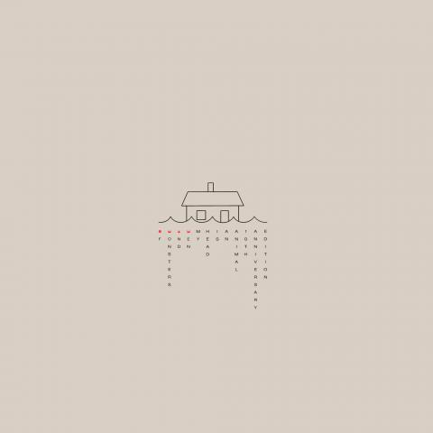

Of Monsters and Men is an Icelandic indie folk/rock band formed in Reykjavík in 2010.
The members are lead singer and guitarist Nanna Bryndís Hilmarsdóttir, singer and guitarist
Ragnar "Raggi" Þórhallsson, lead guitarist Brynjar Leifsson, drummer Arnar Rósenkranz
Hilmarsson and bassist Kristján Páll Kristjánsson.

ALBUM OUT NOW